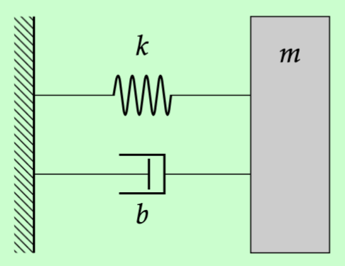

The Transfer Function#
Recall that the response \(x(t)\) of any input \(u(t)\) to an LTI system is characterized by the convolution with its impulse response \(\tilde{x}(t)\). For notational convenience, let’s rename the impulse response to \(g(t)\).
\( x(t) = \int_{0}^{t} u(\tau) g(t - \tau) d\tau \)
Applying the convolution theorem from lecture 1,
\( \mathcal{L}\{x(t)\} = \mathcal{L}\{u(t)\} \mathcal{L}\{g(t)\}\) \( \implies X(s) = U(s) G(s)\) \( \implies G(s) = \dfrac{X(s)}{U(s)} \)
\(G(s)\) is known as the transfer function of an LTI system. Intuitively, it transfers any arbitrary input into the system response. Just as the impulse response to an LTI system fully characterizes an LTI system, the transfer function \(G(s)\) also fully characterizes an LTI system, but now we are in the \(s\)-domain.
Definition (Transfer function)
The transfer function \(G(s)\) of an LTI system \(T\{\cdot\}\) is given by
where \(g(t) = T\{\delta(t)\}\) is the impulse response to the system with zero initial conditions. For LTI systems, the transfer function is always a rational polynomial. This means that the numerator and denominator are polynomials, and the degree of the numerator is at most one less than the denominator. \(D(s)\) is known as the system’s characteristic equation. The system’s zeros and poles are the roots of \(N(s)\) and \(D(s)\) respectively.
Note
When computing the transfer function, we are interested in how the output is related to the input only. This means that we can set the initial conditions to be zero when finding the transfer function.
Exercise 11 (Example)
Compute the transfer function of \(\ddot{x} + 4\dot{x} + 5x = u(t)\).
Taking the Laplace transform of both sides of the ODE: \( s^{2}X(s) + 4sX(s) + 5X(s) = U(s), \) \( \implies X(s)(s^2 + 4s + 5) = U(s) \) \( \implies G(s) = \dfrac{X(s)}{U(s)} = \dfrac{1}{s^{2} + 4s + 5} \)
What is the system’s response to a unit step input \(u(t)\) (this is known as the \textbf{step response})?
\( \mathcal{L}\{u(t)\} = U(s) = \dfrac{1}{s} \) \( \Rightarrow X(s) = U(s) G(s) = \dfrac{1}{s} \dfrac{1}{s^2 + 4s + 5} \)
Then to find \(x(t)\), we take the inverse Laplace transform \(x(t) = \mathcal{L}^{-1}\Biggl\{ \dfrac{1}{s} \dfrac{1}{s^2 + 4s + 5}\Biggl\}\). To do this, you must perform partial fraction decomposition. See previous chapter for examples.
Previously, we were solving initial value problems, and now we have just introduced the concept of a transfer function which describes the relationship between the input and output. When considering the behavior of a system due to some non-zero initial conditions and some input, due to the superposition property of LTI systems, we can sum up the system’s response due to the system input \(x_{p}(t)\) (this may have been referred to as the particular solution from your differential equations course) and its response due to the system initial conditions \(x_{h}(t)\) (similarly, this may be been referred to as the homogeneous solution).
So the total response due to non-zero conditions and input is:
The characteristic equation#
It turns out we can characterize salient properties of LTI systems just by looking at the transfer function of the system. Specifically, by looking at the denominator of the transfer function. Notice that in essentially all of the examples involving inverse Laplace transfers, the answer is consists of exponential or sin/cosine terms, and the exponent or angular frequency depends on the coefficients in the denominator. While values in the numerator affected the coefficients in front of the exponential and sin/cosine terms.
Definition (Characteristic equation)
Given a transfer function \(G(s) = \frac{N(s)}{D(s)}\), the denominator \(D(s)\) of the transfer function is referred to as the characteristic equation.
Standard second order system#
While a transfer function can take of many different forms, for a special class of transfer function, we can very easily interpret the system properties.
To begin, let us consider the following spring-mass-damper system. We have a mass attached to a fixed wall by a linear spring and damper. Let \(x\) describe the horizonal displacement of the mass from some equilibrium position, and suppose there is a force \(u(t)\) being applied to the mass in the positive \(x\) direction. While many things in real life are not quite literally a mass with a spring and damper attached, we can in fact model many mechanical systems as masses subject to some restorative and dissipative forces.

The equation of motion describing the horizontal displacement of the mass, and corresponding transfer function are,
We see that the transfer function conforms to this more general form,
where \(\omega_n\) is the natural (angular) frequency of the system, \(\zeta\) is the damping ratio, and \(K\) is a constant factor, sometimes referred to as the DC gain. As we see more later, the \(K\) is there so that the numerator can “balance out” with the constant term in the denominator. The damped natural frequency is defined as \(\omega_d = \omega_n\sqrt{1 - \zeta^2}\).
Equating terms between the transfer function in (5) and (6), we find that:
This analysis shows that the inertial, restorative, and dissipative properties of the system affects the natural frequency and amount of damping in the response of the system. Although we often associate a spring term as something that will cause your system to oscillate back and forth, if the damping term is too “overpowering”, then we may find that the system will be very sluggish and exhibit no oscillation at all. The damping ratio captures this balance between the restorative and dissipative force.
If \(\zeta > 1\), the system is overdamped, i.e. there are no residual oscillations in the system response.
If \(\zeta = 1\), the system is critically damped. There is the the perfect balance between the restorative and dissipative forces.
If \(0 < \zeta < 1\), the system is underdamped. There is not enough damping to prevent oscillations from occuring.
If \(\zeta < 0 \), energy is being added to the system, its response will grow exponentially.
Exercise 12 (2nd order response)
Given a transfer function \(G(s) = \frac{\omega_n^2}{s^2 + 2 \zeta \omega_n s + \omega_n^2}\). For the different cases of \(\zeta\) described above, what is the impulse and step response of the system?